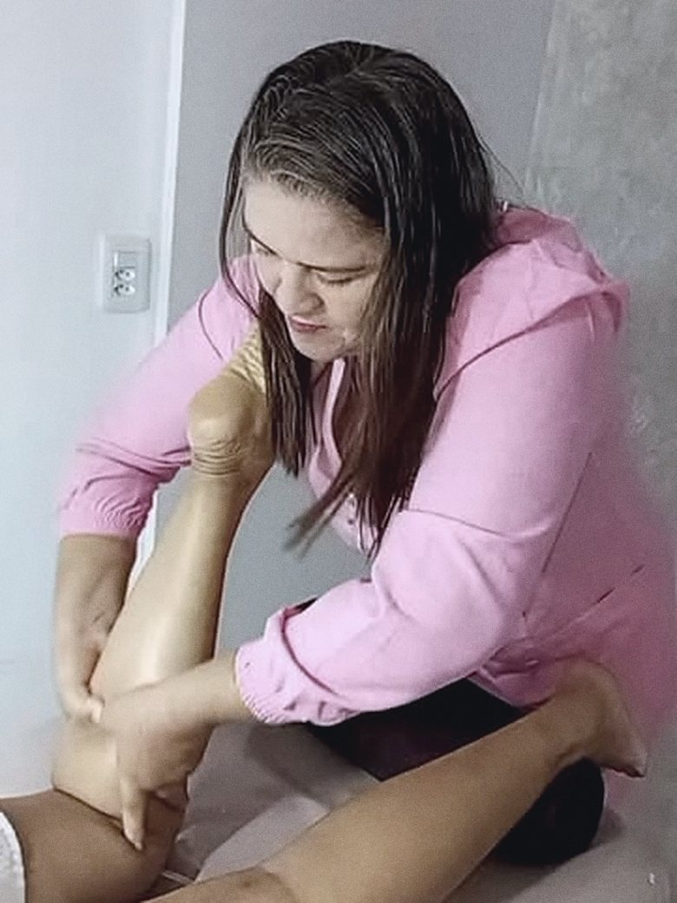
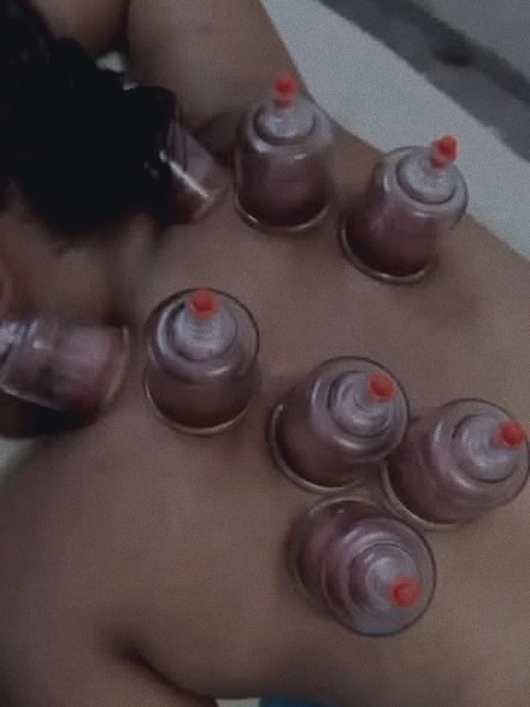
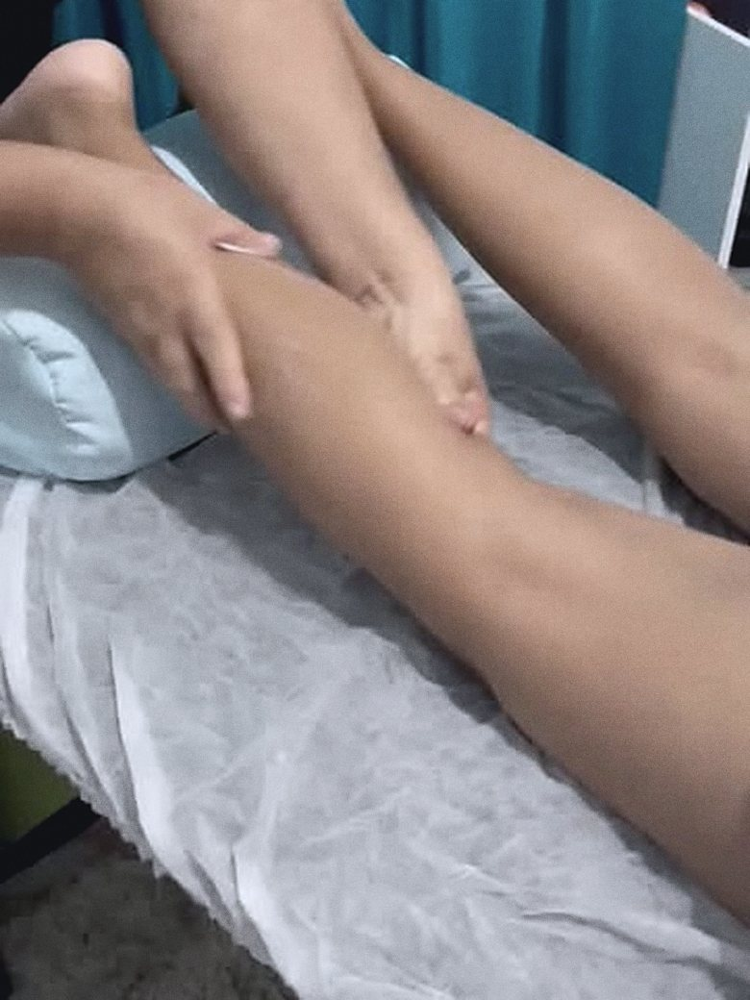

Massagem relaxante
Pressão suave e ritmo constante para baixar o stress do dia. Para quem dorme mal, vive no aperto e precisa desacelerar.
Massagem relaxante, esportiva e terapêutica — e ventosaterapia para soltar a musculatura das costas. Atendimento individual, com hora marcada.
Pressão suave e ritmo constante para baixar o stress do dia. Para quem dorme mal, vive no aperto e precisa desacelerar.
Antes ou depois do treino: prepara a musculatura, ajuda na recuperação e alivia a sobrecarga de quem treina forte.
Trabalho focado no ponto de tensão — pescoço, ombros, lombar. Para quem passa o dia sentado ou carrega peso.
As ventosas puxam a pele e soltam a musculatura profunda das costas. É o atendimento que mais faço por aqui.
Toque na região que incomoda e veja o que eu costumo indicar.
Escolha um ponto no corpo ao lado.
Quando o aperto vem do stress, o corpo inteiro fecha: mandíbula travada, sono ruim, ombro subindo até a orelha. A sessão aqui é de desaceleração — ritmo lento e pressão constante, do começo ao fim.
É a queixa que mais chega aqui. Trabalho o ponto de tensão devagar, camada por camada, até a musculatura soltar — e a ventosa entra quando a mão sozinha não alcança.
Peso, postura e horas sentado param todos no mesmo lugar. É aqui que a ventosa faz mais diferença: ela puxa a pele e chega na camada que a mão sozinha não solta.
De quem fica muito tempo em pé — ou de quem treinou forte e a musculatura não devolveu. Movimento longo, sentido certo, sem pressa.
Massoterapia é bem-estar, não é consulta. Eu não faço diagnóstico nem indico tratamento: se a dor é forte, não passa, veio de queda ou lesão, ou se você está grávida ou em tratamento de saúde, fale antes com o profissional que te acompanha.
Manda no WhatsApp o que está incomodando e há quanto tempo. Sem formulário, sem enrolação.
Olho a agenda e te retorno com as opções que tenho. O endereço vai junto na confirmação.
Pergunto sobre lesões, cirurgias, gravidez e o que dói. É isso que define a pressão e a técnica do dia.
Ambiente calmo, óleo morno e ritmo constante. Se a pressão incomodar, você fala na hora — a gente ajusta.
Água, calor e um alongamento simples para segurar o alívio até a próxima.
Role para o lado — tudo aqui é atendimento real.



Acompanhe o círculo: inspire enquanto ele cresce, segure, solte devagar. É o mesmo ritmo que eu peço no começo de cada sessão.
respiração 1 de 3
Me manda uma mensagem contando o que está doendo. Eu respondo com os horários que tenho.
Atendimento individual, com hora marcada. O endereço eu passo na confirmação.